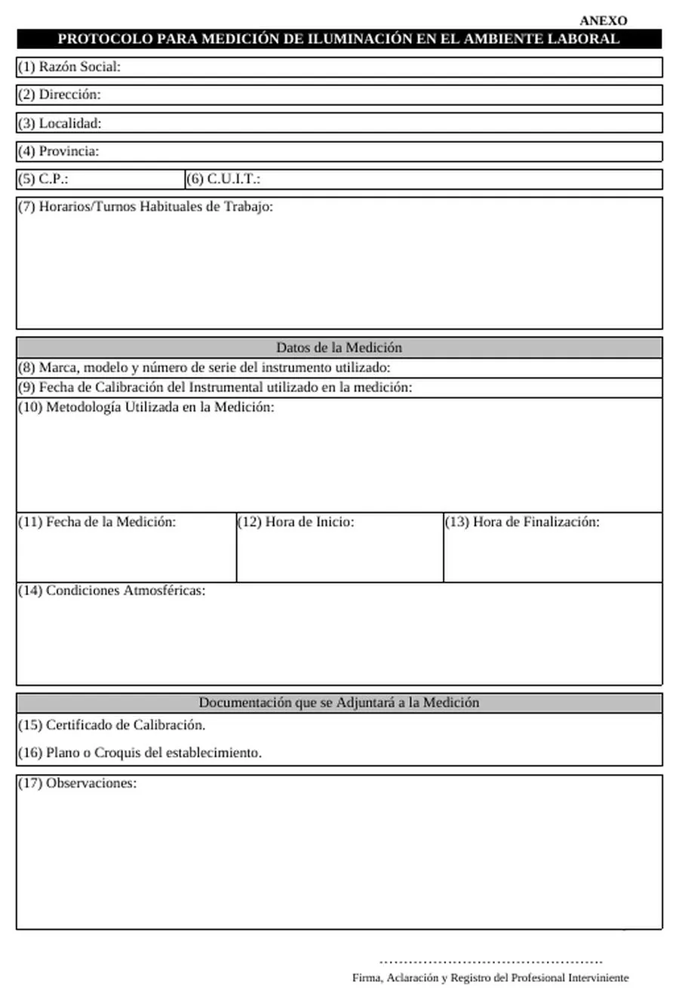
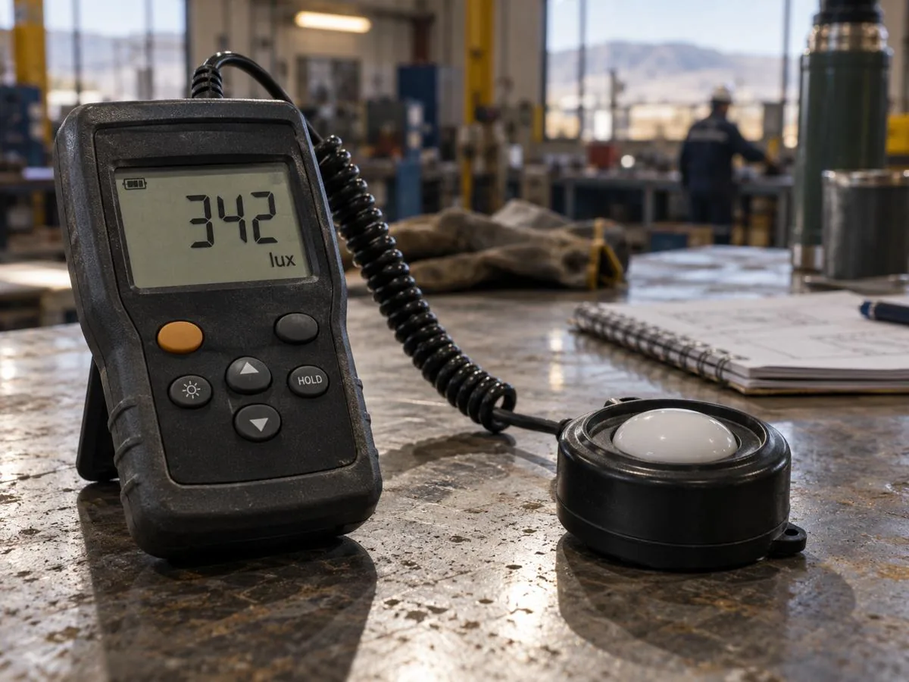

1
Preparar el equipo y los datos de la hoja 1
Luxómetro con certificado de calibración vigente (se adjunta copia, ítem 15). Llená la hoja DATOS antes de salir a medir.
- Display: lectura en lux y factor de escala.
- HOLD: congela la lectura.
- RANGE: si cambia de escala, aplicar el factor multiplicador.
- Sensor con corrector de coseno, siempre horizontal.

| Ítem | Qué va |
|---|---|
| 1–6 | Razón social, dirección, localidad, provincia, C.P. y C.U.I.T. del establecimiento. |
| 7 | Horarios y turnos habituales, para que la medición sea representativa. |
| 8–9 | Marca, modelo y n.º de serie del luxómetro y fecha de su última calibración. |
| 10 | Metodología: “Método de la cuadrícula (índice del local, Res. SRT 84/12)”. |
| 11–14 | Fecha, hora de inicio y fin, condiciones atmosféricas incluida la nubosidad (importa si hay luz natural). |
| 15–16 | Adjuntar certificado de calibración y plano o croquis con los puntos medidos. |
| 17 | Observaciones: condiciones normales y habituales de los puestos a evaluar. |

- Pantalla: lectura en lux. Antes de anotar, esperá a que se estabilice.
- HOLD: congela el valor para anotarlo sin moverte.
- Sensor (fotocelda con difusor): siempre horizontal, mirando hacia las luminarias.
- Cable espiral: te deja separar el cuerpo del sensor y evitar sombras.